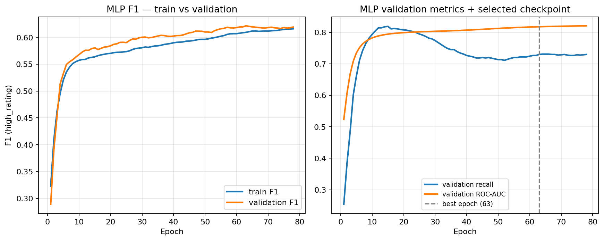

Name: Brandon Jackson
Semester: Summer 2026
Course: Deep Learning (CS 6320)
Work type: Native tabular portfolio data (not proxy, not fallback case study).
| Item | Lock |
|---|---|
| Stakeholder | Hobby retailer screening preorder / initial stock for BGG-aware customers |
| Dataset | Kaggle Board Games Database from BoardGameGeek
(games.csv, 21,925 rated games) |
| Unit | One row per game (BGGId) |
| Target | high_rating = 1 if AvgRating >= 7.0,
else 0 (~26.9% positive) |
| Representation | Native tabular — numeric design metadata,
GameWeight, category flags, simple text-length features,
parsed goodplayers_count |
| Part A path | Portfolio table directly (no Week 6 proxy translator) |
| Seed | 6320 |
| Implementation | 6320-hw6/scripts/; end-to-end:
bash run_local.sh |
Features follow the Assignment 4 charter and Assignment 5 manifest:
rating fields, rank columns, popularity counts, and mis-timed demand
fields (NumOwned, NumWant,
NumWish) are hard-excluded. Raw
Name / Description text are not fed to models
— only length/count proxies (same v1 charter).
build_feature_matrix on each split frame).StandardScaler fit on
training features for logistic regression and MLP;
trees use median-imputed raw features (scale-invariant).Cat:* flags kept as
0/1 integers (low cardinality).Embeddings: Not used. Category fields are binary flags, not repeated high-cardinality IDs. Numeric fields are not identity codes. Sentence for writeup: “Embeddings were not appropriate because categories are low-cardinality one-hot flags and there are no stable high-cardinality entity IDs; I used scaled numerics plus binary category columns instead.”
| Split | Rows | Positive rate |
|---|---|---|
| train | 15,347 | 26.9% |
| validation | 3,289 | 27.7% |
| test | 3,289 | 26.2% |
Positive rates are stable across splits (within ~1.5 pp). Audit
tables: prep/bgg_split/split_audit/ (counts, numeric
distributions, category positive rates).
| Model | Role | Key settings |
|---|---|---|
| Majority class | Sanity | Always predict not-high |
| Logistic regression | Simple linear baseline | L2, unweighted; train-fitted StandardScaler |
| Gradient boosted trees | Strong tabular benchmark | HistGradientBoostingClassifier, depth 6, lr 0.08, 300
trees |
| MLP | Neural tabular | 64→32, ReLU, dropout 0.2, Adam (wd=1e-4), BCE
pos_weight for imbalance, early stop on
validation F1 (patience 15; best epoch
63) |
Model selection uses validation F1 on
high_rating=1. Test metrics reported once for final
comparison. No hyperparameter search beyond the fixed configs above.
| Model | Val F1 | Val recall | Val ROC-AUC | Test F1 | Test recall | Test ROC-AUC |
|---|---|---|---|---|---|---|
| Majority class | 0.000 | 0.000 | 0.500 | 0.000 | 0.000 | 0.500 |
| Logistic regression | 0.527 | 0.422 | 0.815 | 0.544 | 0.454 | 0.832 |
| Gradient boosted trees | 0.685 | 0.624 | 0.895 | 0.714 | 0.661 | 0.910 |
| MLP (early stop, epoch 63) | 0.621 | 0.730 | 0.818 | 0.619 | 0.747 | 0.830 |
Validation precision: logistic 0.703, GBT 0.759, MLP 0.541. Test accuracy: logistic 0.801, GBT 0.861, MLP 0.759.

Figure 1: MLP train/validation F1 and validation recall/ROC-AUC; dashed line = selected checkpoint (epoch 63).
Tabular modeling is justified for this portfolio problem: structured metadata and category flags carry signal well above chance (ROC-AUC ~0.91 test for GBT vs 0.50 majority).
Recommended staged model: gradient boosted trees, not the MLP.
Change trigger: If a time-based split collapses GBT advantage, or if recalibrated probabilities become a hard requirement, revisit logistic + Platt scaling before adding neural capacity.
| Constraint | Implication |
|---|---|
| Interpretability | Logistic and tree splits easier to explain to a buyer than MLP weights |
| Cost / ops | All models train in seconds on local CPU (~22k rows); GBT and MLP similar inference cost |
| Maintainability | Fixed sklearn/torch pipelines; manifest documents feature exclusions |
| Data size | Tabular row count is modest — no need for large-scale neural capacity |
| Monitoring | Track slice metrics (e.g. light vs heavy games from A5) if GBT is deployed internally |
BGG ratings reflect enthusiast community taste, not universal quality. Assignment 5 slices showed weak performance on light games (low positive rate, low recall). A tabular model — especially one tuned for recall like the MLP — can still over-flag niche titles. Outputs should remain human-review screening aids, not automated stock decisions; sensitive-proxy risk from title text is mitigated in v1 by using length features only, but franchise memorization should be audited before client-facing use.
bash run_local.sh from repo root6320-hw2/part_b/data/bgg/games.csv (or
GAMES_CSV)outputs/comparison_table.csv,
outputs/*/summary.json,
outputs/mlp_early_stop/mlp_history.csv,
outputs/plots/mlp_training_curves.png,
logs/run_local.logUsable. BGG games.csv is local, parsed,
and split under the Assignment 4/5 charter (stratified hold-out, seed
6320). Feature manifest and split audits are reproducible via
prepare_bgg_data.py and run_split_audit.py. No
proxy or fallback path was needed.
| Stage | Status |
|---|---|
| Majority + logistic baseline | Complete (A5); logistic metrics reproduced in A6 comparison |
| Assignment 5 evaluation | Complete — imbalance, calibration gaps, slice weakness documented |
| Gradient boosted trees | Trained (A6) — current best tabular candidate |
| MLP tabular | Trained (A6) — competitive recall but secondary to GBT on F1/ROC-AUC |
| Time-based split | Not yet run — still open from charter |
| Text / image modeling | Not started — Week 7+ relevance TBD |
Time-based split by YearPublished
(recent-release validation cohort) with the same feature
manifest and GBT config, plus recalibration
(Platt or isotonic on validation, checked on test). This tests the
charter’s pre-release prediction story beyond random stratified
hold-out.
Honest pre-release metrics (likely lower than random split), better-calibrated probabilities for threshold decisions, and slice tables by release era. Success = documented trade-off between recall and precision under a decision-relevant split, not a single accuracy number.
Week 6 supports keeping tabular methods central to the portfolio: GBT on metadata alone reaches test F1 0.71 / ROC-AUC 0.91. It does not support elevating a neural tabular model — the MLP adds complexity without winning the comparison. The final presentation can argue: structured features are sufficient for internal screening; modality-specific models (text embeddings, cover images) must beat this GBT protocol under a time split before they earn a place in the recommendation.
| A4 item | Week 6 evidence | Update |
|---|---|---|
| Class imbalance | Logistic under-recalls; MLP boosts recall at precision cost; GBT balances best | Confirmed — metric choice must include F1/recall |
| Leakage exclusions | Same manifest; GBT gain is not from rating columns | Reinforced |
| GBT as initial candidate | Now trained; beats logistic and MLP on F1/AUC | Success criterion met for classical stage |
| Time-split generalization | Still random split only | Still untested — next experiment |
| Calibration / deployment | Not re-run in A6; GBT probabilities still need recalibration | Still open |
| Representativeness (light games) | Not re-sliced in A6 | Still flagged from A5 |
Directly relevant. The client problem is inherently tabular metadata prediction. Embeddings are not relevant in v1 (low-cardinality categories). Simpler baselines remain indirectly relevant as floors and explainability anchors even if GBT becomes the primary candidate.
Tool: Cursor (Composer)
AI-assisted: Repo scaffolding, model-comparison scripts, PyTorch MLP training loop, first-draft writeup prose.
My work: Locked native-tabular path; chose model set and fixed configs; ran and verified all metrics against saved outputs; model-choice recommendation based on comparison table.
Certification: I certify that all work not described above is my own, and I verified AI-generated content for accuracy.